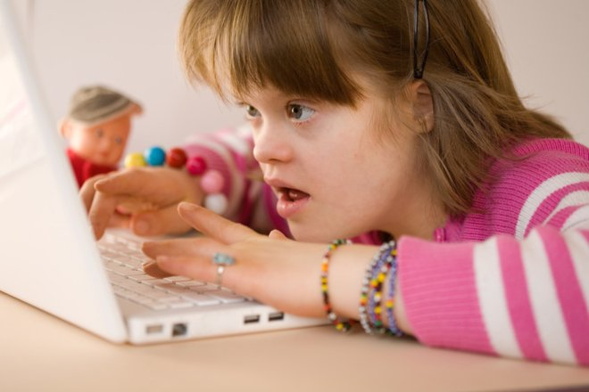
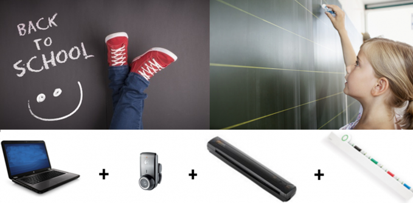

Some digital advances
National Center for Distance Education
The CNED (Centre national d'enseignement à distance) is probably the largest public establishment of the
Ministry of National Education in terms of distance education. Since 1939, it has offered a
correspondence education service to meet the needs of the country which has just entered the Second
World War.
It was in 1997 that the CNED entered the Internet. The digital establishment obviously becomes an asset
for people with disabilities. Indeed, whether for problems due directly to the establishment (unsuitable
structure, missing accompanying staff, etc.) or for external problems (transport to the establishment,
for example), schools are not yet today, not always accessible.
Even more so today, with the COVID-19 pandemic, it is essential to have access to an accessible work
environment and courses.

In 2013, the CNED signed an agreement with the FIPHFP (Fund for the integration of people with
disabilities in the public service) to make their site accessible to everyone, teachers and students. On
September 3, 2021, the date of the last update of their accessibility statement, the site met 75% of the
RGAA version 4.1 criteria for parties without a personal space and only 59% for connected parties. This
is an important point to settle in order to guarantee the same chances of success for everyone. It can
be noted that each year, the site updates its declaration and that they continue their action plan for
accessibility.
The EyeSchool Project
This device facilitates access to information written on the board as well as note taking. It consists of a laptop, a very small scanner, a camera and a digital capture bar attached to the board. 
The camera films the painting or any element that the student cannot see and displays it on the computer screen by zooming or adapting it according to the child's needs (inversion of colors, increase contrasts etc). The scanner makes it possible to transcribe any paper document on the computer, allowing the previously mentioned functionalities but also reading by a voice synthesizer. The Portanum vision assistance software, originally designed by Thales Mission Insertion, also has a vocalized menu allowing the use of EyeSchool by the blind. The digital capture bar is used to capture the movements of the writing hand and transcribe them on the student's computer.
This system is of paramount importance for the education of students with disabilities. Indeed, it could allow these children to study with all the others without the need for constant assistance. EyeSchool has been on the market since 2014.